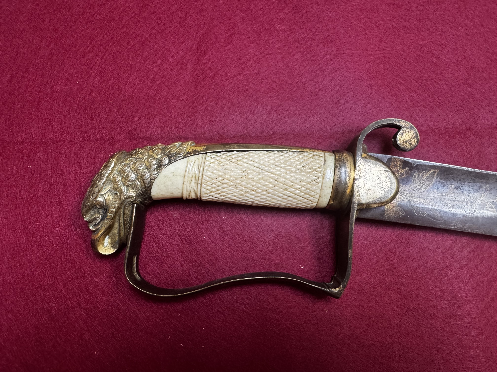
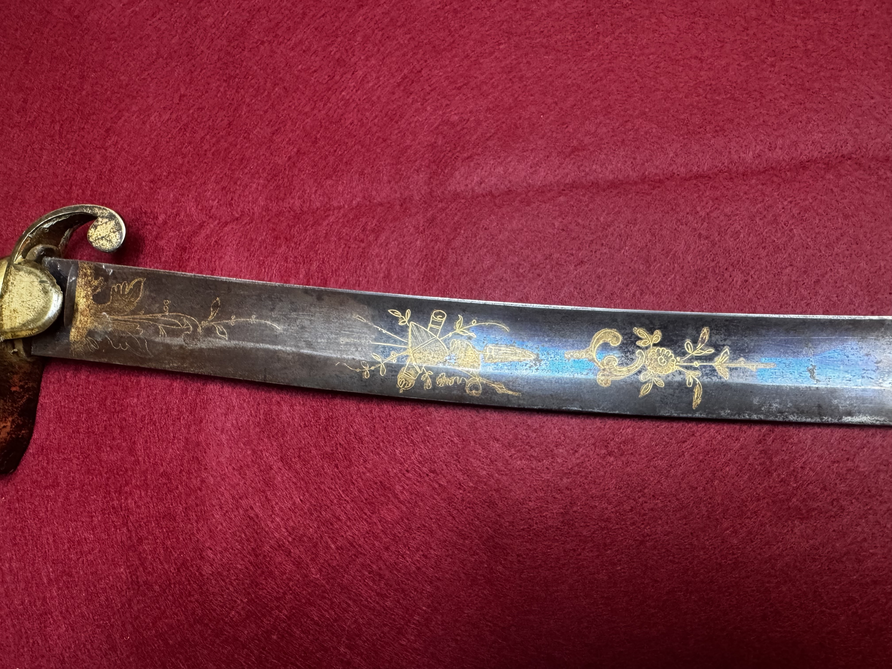
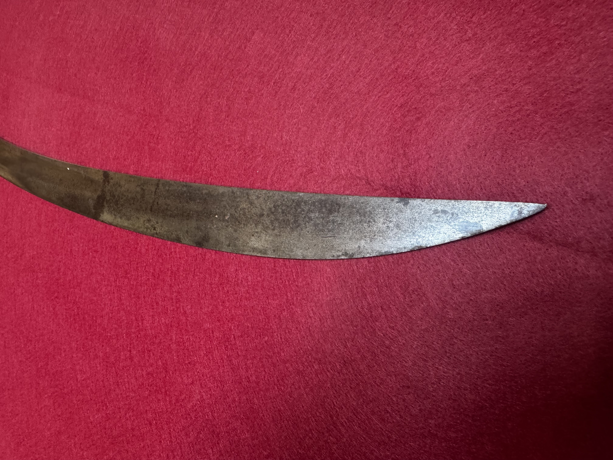
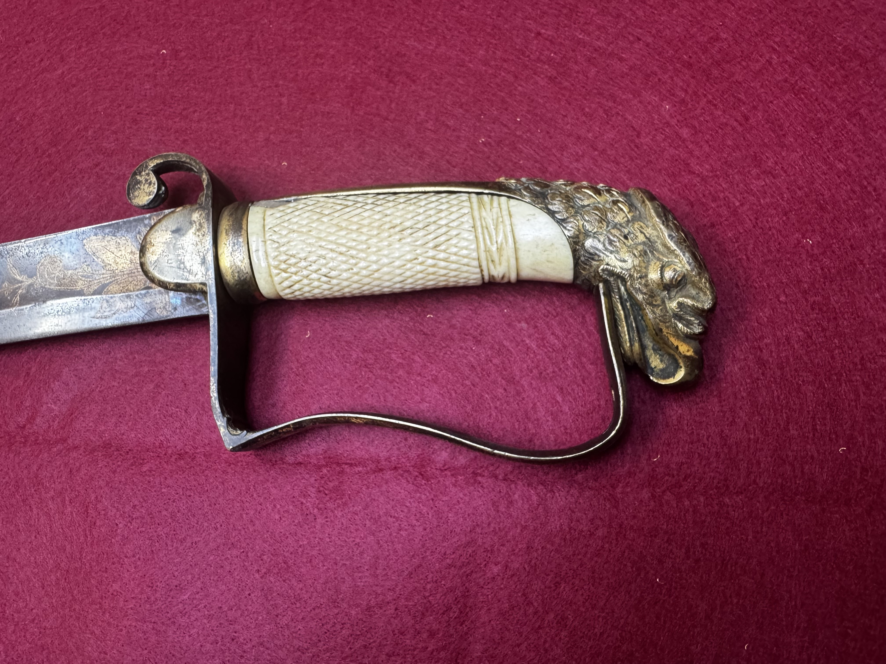
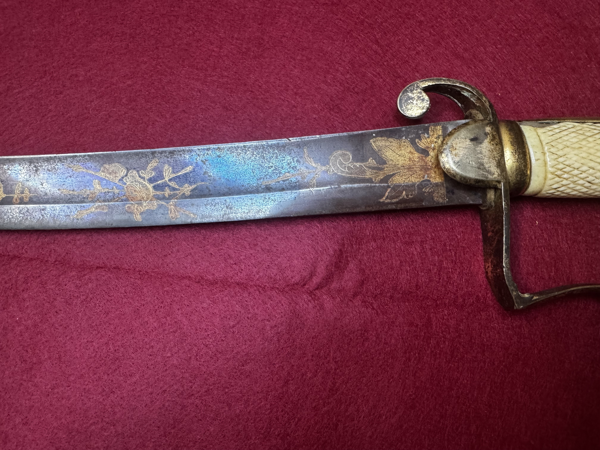
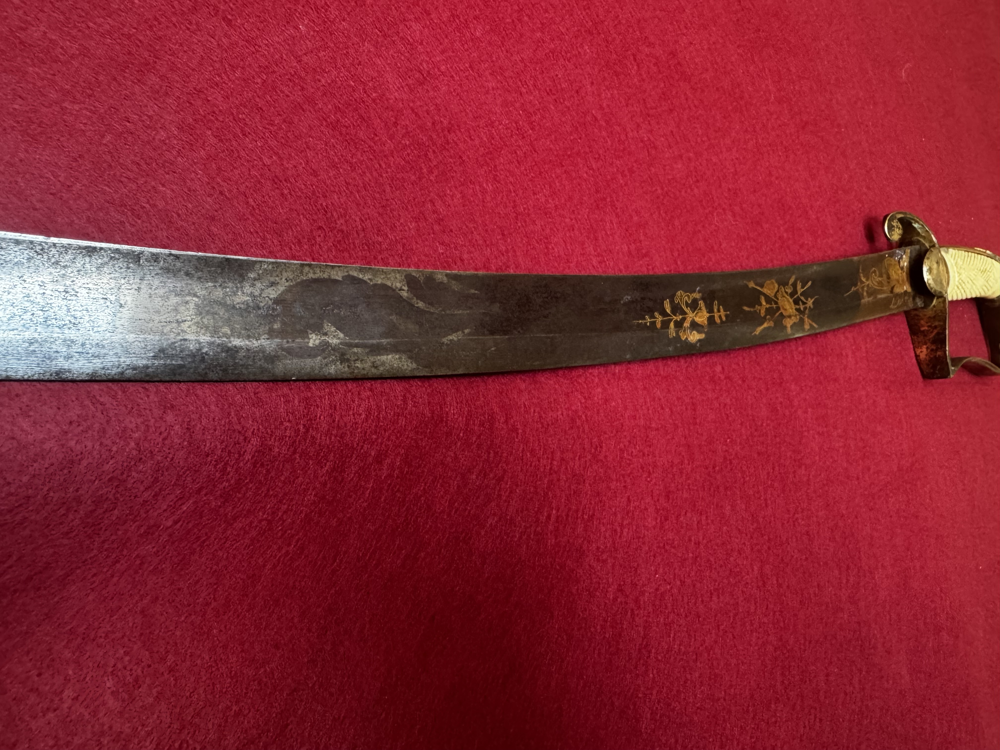
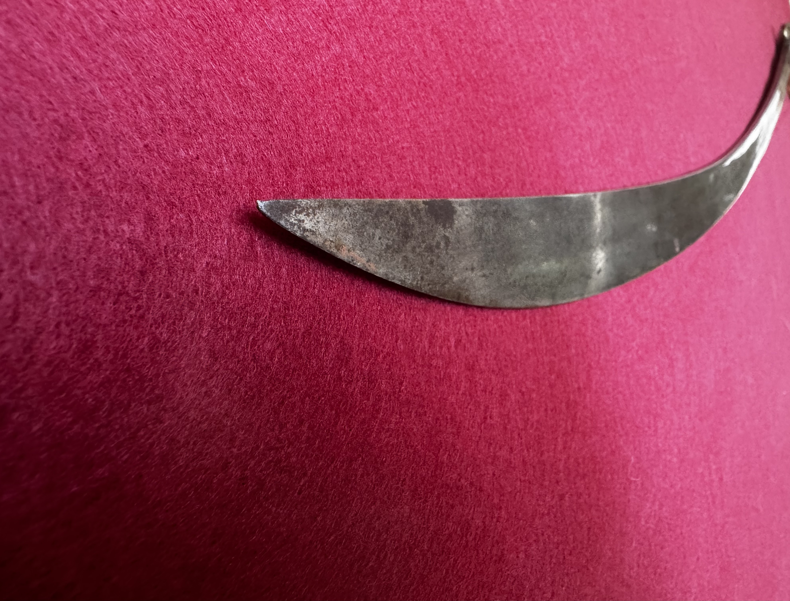
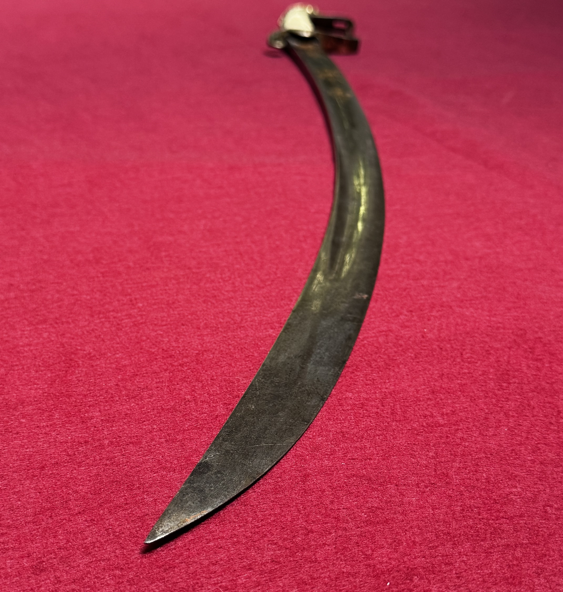
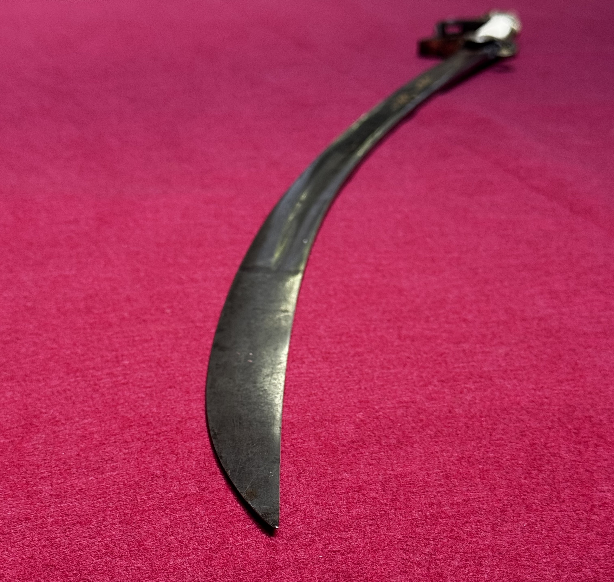
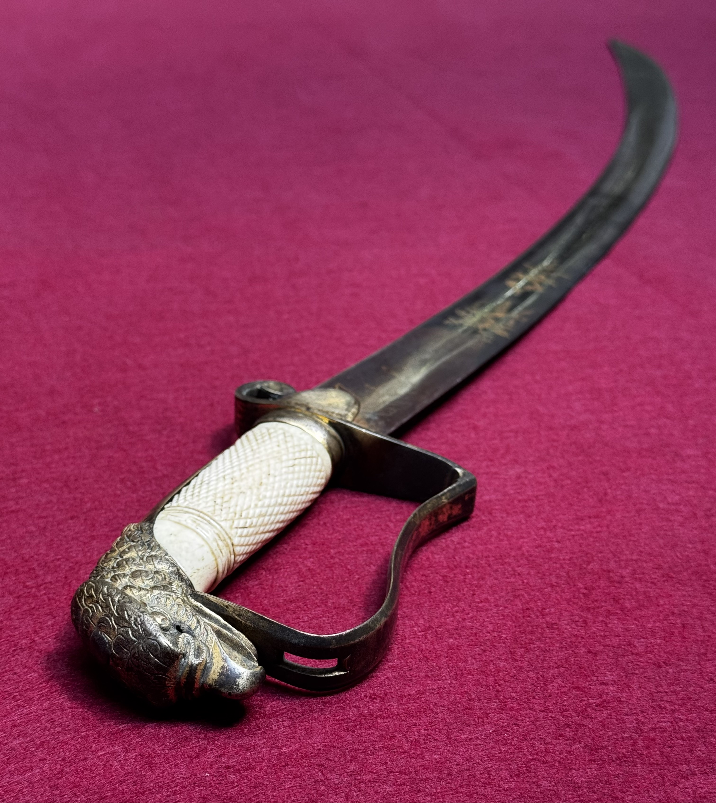

Artifact overview
- Type / Pattern
- U.S. War of 1812 Era Officer Sword
- Approximate date
- Early 19th century, circa 1790–1820
- Origin
- United States — officer’s private purchase, European-influenced
- Current status
- Private collection (Historical Sword Society)

Abstract
This War of 1812 era officer’s sword represents a transitional period in early American military arms, when formal standardization had not yet been fully established. Influenced heavily by British and French designs of the late eighteenth and early nineteenth centuries, such swords often feature light, versatile blades and simplified guard structures. Their form reflects both the practical requirements of early U.S. military service and the broader European traditions from which American sword design evolved.
The photographic record
Image Set
Detailed photographs documenting the sword’s full profile, hilt, guard, blade form, markings, and condition. Twelve original collection photographs. Select an image to open the full-size photograph in a new tab.
View 01
Primary artifact view.

View 02
Additional artifact view.

View 03
Additional artifact view.

View 04
Additional artifact view.

View 05
Additional artifact view.

View 06
Additional artifact view.

View 07
Additional artifact view.

View 08
Additional artifact view.

View 09
Additional artifact view.

View 10
Additional artifact view.

View 11
Additional artifact view.

View 12
Additional artifact view.
Specifications
| Overall length | Not yet documented |
|---|---|
| Blade length | Not yet documented |
| Blade width (at ricasso) | Not yet documented |
| Blade thickness (at ricasso) | Not yet documented |
| Point of balance | Not yet documented |
| Weight | Not yet documented |
| Fullers | Not yet documented |
| Edge geometry | Not yet documented |
| Hilt material | Not yet documented |
| Grip | Not yet documented |
| Scabbard | Not yet documented |
Marks, Inscriptions, and Identification Basis
Observed markings
Not yet documented.
Interpretation
Not yet documented.
Identification basis
Not yet documented.
References
Not yet documented.
Condition and Conservation Notes
- Blade: Not yet documented.
- Hilt: Not yet documented.
- Scabbard: Not yet documented.
- Stabilization actions: Not yet documented.
Provenance
Acquisition details, prior ownership, dealer notes, and supporting documentation have not yet been documented.